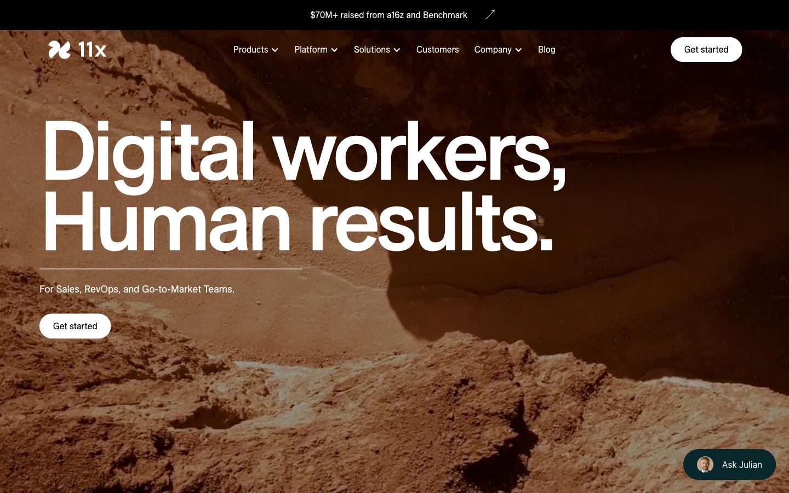

For Sales, RevOps, and Go-to-Market Teams.
A unified command platform orchestrating autonomous account reconnaissance, high-touch multi-channel sequences, and natural telephone outreach.

“We do not build software tools for human reps to endlessly manage. We build digital colleagues who take complete accountability for revenue outcomes.”
Traditional sales software buried revenue teams under mountains of dashboard maintenance, manual data entry, and cookie-cutter cadences that buyers filter out.
11x introduces autonomous digital workers. Powered by multi-agent reasoning, continuous internet research, and voice synthesis indistinguishable from top enterprise sales reps, our workers research target accounts, draft custom outreach, conduct outbound discovery calls, and book pipeline directly into your calendar.
Zero ramp time. Infinite horizontal scale. 100% adherence to your brand voice and enterprise compliance guidelines.
Specialized digital workers designed to operate as full-time team members across outbound prospecting, voice qualification, and account intelligence.
Autonomous Sales Development Representative (SDR)
Alice acts as a full-time outbound SDR. She conducts comprehensive multi-source account research, detects buying intent, writes hyper-personalized emails, engages over LinkedIn, handles objections, and schedules meetings straight into your reps’ calendars.
Parses 10-K filings, quarterly earnings, job listings, and tech stacks to find authentic pain points.
Executes bespoke email and LinkedIn outreach with tone matched to your top enterprise closers.
Answers questions, overcomes gatekeepers, and routes qualified buyers directly into calendar slots.
Logs every single touchpoint, response, and sentiment metric back into Salesforce or HubSpot.
Test drive how Alice, Jordan, and Julian execute live workflows across outbound email synthesis, telephone conversations, and buying signals.
Hi Sarah,
Saw your note on LinkedIn regarding DataCore’s push to expand enterprise sales by 35% this quarter, as well as your recent hiring post for 4 enterprise SDRs.
Typically, scaling outbound pipeline requires 3–6 months of ramp time per rep. We deployed an autonomous SDR fleet for Retool and Ramp that automated account research and generated 140+ qualified meetings in month one—at an 80% lower cost per pipeline dollar.
Would you be open to a 10-minute walkthrough this Thursday at 2:00 PM EST to see how Alice can handle outbound research for your reps?
Best regards,
Alice
Autonomous Outbound Specialist · 11x Revenue Fleet
Target Account: Acme Financial Technologies. New VP of Sales Engineering appointed from Stripe. Julian automatically extracted hiring background, mapped 14 direct reports, and queued a warm introduction sequence for Alice.
Target Account: Vanguard Cloud installed HubSpot Enterprise and Outreach.io. Julian calculated high ICP congruence score (98/100) and flagged account for multi-touch phone qualification via Jordan.
Every 11x digital worker operates inside dedicated, isolated enterprise boundaries. Built from the ground up for strict regulatory adherence, zero model hallucination, and seamless bi-directional integration with your existing GTM stack.
Four foundational pillars that differentiate 11x digital workers from rudimentary automation tools.
Julian crawls public filings, executive job openings, technology telemetry, and procurement announcements to detect exact buyer pain before your competitors do.
Synchronize email, phone calls, and LinkedIn touches seamlessly. If a buyer views your email without replying, Jordan follows up by phone within 15 minutes.
Digital workers continuously learn from your top closers. Objection handling models self-optimize daily based on verified meeting conversion rates.
Bi-directional synchronization with Salesforce, HubSpot, and Gong. Zero manual logging for human reps; clean data, lifecycle stages, and meeting recordings.
Quantify the net financial return and hours saved when deploying 11x autonomous digital workers alongside your account executive team.
Read how forward-thinking sales executives scaled outbound pipeline while cutting customer acquisition costs in half.
“Alice booked 138 qualified enterprise pipeline meetings in her first 60 days. Our closing account executives now spend 100% of their day in active negotiations rather than scraping contact lists.”
“Jordan’s telephone conversation quality blew our board away. Sub-400ms latency means zero robotic awkwardness. He handles objections fluidly and transfers hot buyers directly to our live sales floor.”
“Before 11x, our SDR ramp took five painful months. We deployed Alice and Julian in three business days. We generated $2.4M in incremental pipeline during our very first quarter.”
Join hundreds of high-growth tech companies and enterprise sales teams transforming outbound pipeline with 11x digital workers.
Deployment in 72 hours · SOC2 Type II Certified · Dedicated revenue engineer assigned